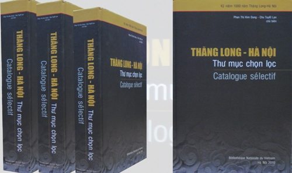

Hướng tới Đại lễ kỷ niệm 1.000 năm Thăng Long - Hà Nội, Thư viện Quốc gia Việt Nam tổ chức biên soạn cuốn Thăng Long - Hà Nội: Thư mục chọn lọc, với mong muốn cung cấp cho bạn đọc trong nước và quốc tế nguồn tư liệu phản ánh bức tranh toàn cảnh về Thăng Long - Hà Nội xưa và nay.
Thư mục gồm 2.557 tư liệu: 630 đơn vị tư liệu Hán Nôm, 355 đơn vị tư liệu Luận án tiến sĩ, 1.572 đơn vị tư liệu tiếng Việt và tiếng Latinh, được chia thành 04 mục chính: Địa linh nhân kiệt; Văn hóa vật thể; Văn hóa phi vật thể; Hội nhập và phát triển: Cụ thể:
ĐỊA LINH NHÂN KIỆT
Đất đế vương:
Tập hợp những tư liệu về mảnh đất và con người Hà Nội từ kinh đô Âu Lạc tới thủ đô Hà Nội;
Truyền thống xây dựng và bảo vệ đất nước:
Tập hợp các tư liệu nói về truyền thống dựng nước và giữ nước, chống giặc ngoại xâm;
Truyền thống khoa bảng:
Tập hợp tư liệu về những người thầy, những người đỗ đạt từ xưa đến nay;
Nguyên khí quốc gia:
"Hiền tài là nguyên khí quốc gia": tập hợp các tư liệu giới thiệu về những người có công lao đặc biệt với đất nước;
VĂN HOÁ VẬT THỂ
Di tích lịch sử-văn hoá
Tập hợp tư liệu giới thiệu các di tích lịch sử và văn hoá.
Của ngon vật lạ
Tập hợp tư liệu về các sản phẩm nông nghiệp và món ăn đặc trưng Hà Nội (cốm làng Vòng, cá rô đầm Sét, bưởi Diễn ...);
Thủ công mỹ nghệ
Tập hợp tư liệu về làng nghề và các sản phẩm thủ công mỹ nghệ (gốm Bát Tràng, lụa Vạn Phúc, giấy dó làng An Thái, đúc đồng Ngũ Xã, ...)>
VĂN HOÁ PHI VẬT THỂ
Phong tục tập quán
Tập hợp tư liệu giới thiệu phong tục, tập quán của người Hà Nội;
Tôn giáo tín ngưỡng
Tập hợp tư liệu về tín ngưỡng tôn giáo tín
Văn hoá nghệ thuật
Tập hợp tư liệu về các hoạt động văn hoá nghệ thuật
HỘI NHẬP VÀ PHÁT TRIỂN
Tập hợp tư liệu nói về quan hệ của Hà Nội với các địa phương trong và ngoài nước, kế hoạch phát triển của Hà Nội

Đây là cuốn tư liệu chọn lọc về Thăng Long – Hà Nội trong kho tàng hơn 1,5 triệu đơn vị của Thư viện Quốc gia và của các thư viện, tủ sách khác trong cả nước. Nội dung tập trung giới thiệu những nét đặc thù về Thăng Long - Hà Nội trên các mặt lịch sử, địa lý, kinh tế, chính trị, văn hóa và xã hội, ... của mảnh đất ngàn năm văn hiến nhằm cung cấp thông tin toàn diện cho những ai có nhu cầu tìm hiểu về quá trình hình thành, xây dựng, bảo vệ, hội nhập và phát triển của Thăng Long - Hà Nội trong suốt chiều dài 1.000 năm lịch sử, những tư liệu này, phần lớn đã được xuất bản thành sách, đăng tải trên các báo, tạp chí chuyên ngành, mảng tư liệu lưu trữ từ thời thuộc Pháp, mảng luận án tiến sĩ của các học giả Việt Nam và nước ngoài nghiên cứu về Thăng Long - Hà Nội, mảng tư liệu hương ước làng xã và các vùng phụ cận, đặc biệt hơn cả là mảng tư liệu Hán Nôm (bao gồm thư tịch và văn bia) được xem là chứng cứ gốc vô cùng quan trọng cho việc tìm hiểu, nghiên cứu về lịch sử văn hóa đất và người Thăng Long - Hà Nội.
Phụ lục những nguồn tư liệu quý có trong Thư mục chọn lọc Thăng Long – Hà Nội
I- TƯ LIỆU VỀ LỊCH SỬ VÀ ĐỊA LÝ THĂNG LONG – HÀ NỘI
Mảnh đất Thăng Long - Hà Nội đã được các sử gia và các nhà nghiên cứu trong và ngoài nước đề cập đến trong rất nhiều nguồn tư liệu khác nhau, trước hết phải kể đến:
1. Tư liệu Hán Nôm:
Từ 630 đơn vị tư liệu Hán Nôm (thư tịch và văn bia): Ban biên soạn đã chọn lọc và giới thiệu một số tư liệu tiêu biểu như: Đại Nam nhất thống chí (大 南 一 統 志), Đại Việt sử ký toàn thư (大 越 史 記 全 書), Khâm định Việt sử thông giám cương mục ((欽定) 越 史 通 鑑 綱 目), Đại Nam thần lục (大 南 神 錄), An Nam vũ cống (安 南 禹 貢), Bắc thành địa dư chí lục (北 城 地 輿 誌 錄), Bắc Kỳ các tỉnh đạo phủ huyện (北 圻 各 省 道 府 縣 ), Bắc Kỳ giang sơn cổ tích (北 圻 江 山 古 踖), Bắc Kỳ các tỉnh toàn đồ (北 圻 各 省 全 圖), An Nam hình thắng đồ (安 南 形勝 圖), Bắc hành đồ bản (北 行 圖 版), Bằng trình thản bộ (鵬 程 坦 步), Hà Nội phó kinh nhật trình (河 內 赴 京日 程), Lĩnh Nam chích quái (嶺 南 摭 怪), Mã Lân dật sử (馬 麟 逸 史), Thăng Long cổ tích khảo (昇龍古跡考), Hoàn Long huyện chí (環 龍 縣 志), Đông Ngạc xã chí (東 鄂 社 誌), Hà Nội địa dư (河 內 地 與), Hà Nội địa bạ (河 內 地 簿), Hà Nội sơn xuyên phong vực (河 內 山 川 風 域), Hà thành linh tích cổ lục (河 城 靈 跡 古 錄), Tây Hồ chí (西 湖 志), La Thành cổ tích vịnh (羅 城 古 蹟 詠), Thăng Long tam thập vịnh (昇 龍 三 十 詠) và Thăng Long thành hoài cổ thập tứ thủ (昇龍城懷古十四首), Cổ Loa thành sự tích điền thổ sắc phong hợp biên (古 螺 城 事 踖 田 土 敕 丰 合 編), ... Trong số 82 bia Tiến sĩ ở Văn miếu Quốc tử giám Hà Nội, chúng tôi giới thiệu những bia Tiến sĩ là người Thăng Long - Hà Nội. Đặc biệt, có văn bia khoa thi năm Bính Tuất, niên hiệu Vĩnh Thịnh năm thứ 2 (1706), lấy đỗ 5 Tiến sĩ thì cả 5 vị đều quê Thăng Long - Hà Nội,... thật đáng tự hào.
Tư liệu của học giả nước ngoài:
Tiếp theo phải kể đến một số tư liệu do các học giả người Pháp viết vào các giai đoạn khác nhau trong lịch sử, dưới đây là một số công trình tiêu biểu của họ:
(1) Hà Nội giai đoạn 1873-1888 của tác giả Andre’ Masson. Nội dung sách gồm 6 chương và phụ lục ảnh đề cập đến một giai đoạn đặc biệt trong lịch sử Hà Nội (giai đoạn 1873-1888- bỏ), lúc này các thành lũy, phường thị phong kiến đã chuyển sang thành phố quy hoạch theo kiểu châu Âu.
(2) Feuille de Hanoi : Carte géologique de l'Indochine. Notice explicative của Jacob, Mansuy, Dussault, xuất bản năm 1928. Nội dung tập bản đồ giới thiệu, giải thích, chỉ dẫn về các lĩnh vực thuộc địa phận Thủ đô Hà Nội - trích trong tập bản đồ địa chất Đông Dương.
(3) Etude sur un Portulan annamite du XVe siècle : Extrait du Bull. de Géographie historique et Descriptive, No 2 - 1896 của học giả G. Dumoutier. Ghi chép, nghiên cứu về lịch sử, địa lý thành Thăng Long (thế kỷ XV) của chính phủ Pháp, dựa trên các bản đồ, sơ đồ các cảng Hà Nội cổ. Mục đích khẳng định tầm quan trọng của Việt Nam trong lưu thông hàng hoá giữa khu vực Đông Nam Á với châu Á và thế giới qua các hải cảng Việt Nam thời kỳ đó.
(4) Le Grand-Bouddha de Hanoi: Etude historique, archéologique et épigraphique sur la Pagode de Tran-Vu, của tác giả G. Dumoutier, xuất bản năm 1888. Nội dung nghiên cứu lịch sử, khảo cổ học và hệ thống văn khắc ở đền Trấn Vũ (nơi thờ Huyền Thiên Trấn Vũ, vị thần được người Việt Nam tôn thờ vì đã bảo vệ trấn Bắc của kinh thành Thăng Long). Tượng Trấn Vũ được đúc bằng đồng thờ ở đền này là bức tượng lớn mà người châu Âu gọi là "Le Grand Bouddha de Hanoi".
(5) Les Pagodes de Hanoi : Etude d'archéologie et d'épigraphie annamites của G. Dumoutier, xuất bản năm 1887. Nội dung nghiên cứu khảo cổ học và hệ thống văn bia của 21 đền, chùa ở Hà Nội: chùa Một cột, Quán Sứ, Trích Sài, Huyền Thiên... và các đền Quán Thánh, Sinh Từ, Bạch Mã, Văn miếu Quốc tử giám.
(6) Hanoi của IFA, Nxb. Agence de la Francophonie. Nghiên cứu về lịch sử, địa chí thủ đô Hà Nội; nghệ thuật kiến trúc cổ, những đổi thay của thành phố trải qua các thời kỳ lịch sử; thành phố từ những ngày mới thành lập năm 1010; thời kỳ thuộc Pháp từ 1874-1954; thời kỳ khôi phục và phát triển trở thành thành phố hiện đại, từ 1955 đến nay.
(7) Histoire de Hanoi (Lịch sử Hà Nội) của tác giả Philippe Papin. Nghiên cứu khá toàn diện về lịch sử Hà Nội trải qua các thời kỳ từ đồ đá sang Âu Lạc, đến thời Bắc thuộc và đặc biệt là giai đoạn Việt Nam giành độc lập từ tay hai đế quốc lớn là Pháp và Mỹ…
3. Tư liệu của các học giả Việt Nam:
Đa phần trong cuốn Thư mục chọn lọc về Thăng Long - Hà Nội, là các công trình, bài viết của các học giả Việt Nam, mở đầu bằng việc dời đô của Lý Công Uẩn tạo ra cho một thời kỳ ổn định về chính trị, củng cố và phát triển kinh tế xã hội, xây dựng đời sống tinh thần của dân tộc Việt Nam. Chiếu dời đô tuy chỉ gói gọn trong hai trang giấy nhưng đã thể hiện được tư tưởng lớn của thời đại, phản ánh trình độ phát triển của đất nước, ý thức của nhân dân, chỗ mạnh chỗ yếu của ta so với bên ngoài, để từ đó chỉ ra tính tất yếu của việc dời đô. Chiếu dời đô thể hiện một nhãn quan rộng lớn về tình hình lịch sử và địa lý của dân tộc, để tìm ra vị trí thuận lợi nhất cho việc mở mang kinh tế, phát triển giao thông quy tụ nhân tài, trở thành vị trí chiến lược cho sự phát triển và ổn định lâu dài của dân tộc. Có thể khẳng định Chiếu dời đô ra đời trong bối cảnh thiên thời, địa lợi, nhân hoà – đã xây dựng nên một Thăng Long ngàn năm văn hiến. Cũng liên quan về vấn đề lịch sử và địa lý Thăng Long - Hà Nội, có thể kể đến những công trình và bài viết tiêu biểu sau:
(1) Di tích danh thắng Hà Nội và vùng phụ cận (Historical remains & beautiful places of Hanoi and the surrounding areas) của nhóm soạn giả Lưu Minh Trị, Giang Quân, Nguyễn Doãn Tuân. Nội dung giới thiệu lịch sử hình thành địa danh Hà Nội với Chiếu dời đô của Lý Công Uẩn; Các di tích lịch sử và danh lam thắng cảnh của thủ đô Hà Nội; Các làng nghề truyền thống ở Hà Nội; Một số di tích lịch sử văn hoá ở các vùng phụ cận của Hà Nội.
(2) Thêm một số bản đồ Thăng Long thời Lê (thế kỷ XV - XVIII) của tác giả Bùi Thiết. Trình bày xuất xứ của 9 tấm bản đồ thành Thăng Long dưới thời Lê về hình dáng, các vòng thành và các chú thích trên bản đồ, đặc biệt nhấn mạnh những điểm giống & khác nhau của 5 tấm bản đồ mới tìm thấy.
(3) Cartes anciennes de Hanoi et des environs (Bản đồ cổ Hà Nội và vùng phụ cận, công trình xuất bản trong khuôn khổ Dự án FSP VALEASE) (Quỹ hỗ trợ ưu tiên nhằm phát huy thư tịch cổ tại Đông Nam Á). Giới thiệu 54 bản đồ có niên đại khác nhau từ năm 1873 đến năm 1965, cho thấy sự biến đổi của Hà Nội về mặt không gian, chúng được sắp xếp thành 3 phần, tương ứng với những giai đoạn lịch sử của Thăng Long - Hà Nội.
(4) Từ điển Hà Nội địa danh của Bùi Thiết. Nội dung giới thiệu 3.400 mục từ về địa danh của Hà Nội từ cội nguồn đến đương đại, gồm địa danh tự nhiên, địa danh hành chính, lịch sử, văn hoá và thương mại, ... Bên cạnh đấy còn có nhiều thông tin liên quan đến địa danh đó, như nơi chốn và thời điểm xuất hiện, ...
(5) Di tích lịch sử - văn hoá trong khu phố cổ và xung quanh hồ Hoàn Kiếm - Hà Nội của nhóm soạn giả Lê Văn Lan, Nguyễn Bá Đang, Trần Lê Văn. Nội dung giới thiệu nguồn gốc, lịch sử các di tích lịch sử - văn hoá thuộc khu phố cổ Hà Nội, như Hồ Gươm, Đảo Ngọc, Ô Quan Chưởng, đền Ngọc Sơn, đền Bà Kiệu và chùa Phúc Long...
(6) Địa bạ cổ Hà Nội huyện Thọ Xương, Vĩnh Thuận, GS. Phan Huy Lê chủ biên; dịch và hiệu đính: Vũ Văn Quân, Nguyễn Ngọc Phúc, Vũ Văn Sạch. Giới thiệu địa phận làng xã, vị trí hành chính, diện tích ruộng đất, các thủ tục hành chính,... của huyện Thọ Xương, huyện Vĩnh Thuận trong đó gồm: tổng Đông Thọ, Đồng Xuân, Kim Hoa, Phúc Lâm, Thanh Nhàn và Thuận Mỹ...
(7) Địa chí Cổ Loa Chủ biên: Nguyễn Quang Ngọc, Vũ Văn Quân. Nghiên cứu địa lí tự nhiên, địa lý hành chính, lịch sử từ thời tiền sử đến nay, bên cạnh đấy cũng giới thiệu các thành tựu về giáo dục, y tế, văn hoá, xã hội và vệ sinh môi trường ở địa phương này, cùng các nhân vật lịch sử của Cổ Loa - Kinh đô nước Âu Lạc thời An Dương Vương, hiện nay là xã Cổ Loa, huyện Đông Anh, thành phố Hà Nội.
8) Địa lý Hà Nội, nhóm soạn giả: Bùi Công Hoài, Phạm Khắc Lợi, Lê Thông. Nghiên cứu về vị trí địa lí, địa giới và sự phân chia hành chính, điều kiện tự nhiên, tài nguyên thiên nhiên, dân cư và kinh tế của Hà Nội.
(9) Lịch sử Hà Nội qua tài liệu lưu trữ / Ngô Thiếu Hiệu (ch.b.), Phạm Thanh Hoài, Cao Thị Huấn... Những tài liệu lưu trữ và tư liệu, phản ánh sự phân định địa giới của tỉnh và thành phố Hà Nội từ khi thành lập; Quá trình thay đổi, bao gồm việc thành lập, tách, sáp nhập, chuyển đổi phạm vi quản lí, đổi tên, tái thành lập ... từ tỉnh đến các phủ, huyện, tổng, xã, thôn ... thuộc các huyện ngoại thành từ năm 1873 đến 1954.
(10) Sưu tập vũ khí thời Lê ở Ngọc Khánh (Hà Nội) : LA TS lịch sử / Nguyễn Thị Dơn. Thống kê, phân loại, khảo tả chi tiết hiện trạng, cung cấp tư liệu và những nhận xét bước đầu về đặc điểm vũ khí thời Lê ở nước ta. Loại hình vũ khí, hoạt động của Giảng Võ đường thế kỷ 15-18. Những tư liệu lịch sử về thời Lê, lịch sử Hà Nội và lịch sử quân sự Việt Nam.
(11) Địa chí Thăng Long - Hà Nội trong thư tịch Hán Nôm / Nguyễn Thuý Nga, Nguyễn Văn Nguyên chủ biên. Giới thiệu bản dịch tiếng Việt 14 tài liệu địa chí chữ Hán về Thăng Long - Hà Nội, đây là những tài liệu địa chí quan trọng để tìm hiểu về vị trí, diên cách, nhân vật, thổ sản, nghề nghiệp, phong tục của Thăng Long - Hà Nội trong quá khứ, đặc biệt việc nghiên cứu địa lý lịch sử, về các phố phường và cửa Ô Hà Nội xưa, về Hoàng thành Thăng Long, về các di tích lịch sử văn hoá.
(12) Hà Nội cõi đất - con người / Nguyễn Vinh Phúc. Giới thiệu về đường phố, nhân vật lịch sử, các lễ hội của Hà Nội và lộ trình dời đô của Lý Thái Tổ từ Hoa Lư về Thăng Long.
(13) Lịch sử Thăng Long - Hà Nội / Chủ biên: Nguyễn Vinh Phúc; Lê Văn Lan, Nguyễn Minh Tường. Cuốn sách được xuất bản nhân dịp kỷ niệm 1000 năm Thăng Long - Hà Nội, để cung cấp cho bạn đọc những kiến thức cơ bản về lịch sử vùng đất kinh kỳ trải gần ngàn tuổi. Cuốn sách soạn theo chuyên mục, dựa trên những thành tựu nghiên cứu về Hà Nội gần đây nhất để tái hiện lại quá trình mười thế kỷ tạo dựng nên Thăng Long - Hà Nội.
(14) Tìm lại dấu vết thành Thăng Long / Phạm Hân. Giới thiệu vị trí địa lí thành Hà Nội đời Nguyễn và thành Thăng Long đời Lý, Trần, Lê. Tiếp thu kết quả nghiên cứu của những người đi trước, tác giả cuốn sách đã dẫn thư tịch xưa để tìm hiểu và lý giải về thành Thăng Long trong diễn trình lịch sử Lý - Trần - Lê - Nguyễn, theo chiều xuôi dòng lịch sử. Đồng thời ông cũng xuất phát từ Hà Nội hôm nay lần ngược dòng lịch sử lên thời Nguyễn - Lê - Trần - Lý ...
II- TƯ LIỆU VỀ TÌNH HÌNH KINH TẾ, CHÍNH TRỊ, VĂN HOÁ VÀ XÃ HỘI CỦA THĂNG LONG-HÀ NỘI
Sau khi định đô ở Thăng Long, nhà Lý với tinh thần nhìn xa trông rộng đã vừa đặt nền tảng lâu dài cho một đất nước văn minh giàu mạnh, vừa kịp thời phát huy tiềm năng của khoa học xã hội và nhân văn phục vụ cho những nhu cầu cấp thiết của đất nước. Thành tựu này đã được thể hiện trong hàng loạt các công trình và bài viết, nội dung đề cập đến các vấn đề kinh tế, chính trị, văn hoá xã hội và giáo dục trải qua các giai đoạn phát triển khác nhau của Thăng Long - Hà Nội.
1. Luận án Tiến sĩ viết về Hà Nội:
(1) Thăng Long - Hà Nội thế kỷ XVII - XVIII - XIX : Luận án Phó tiến sĩ sử học/ Nguyễn Thừa Hỷ. Luận án nghiên cứu Thăng Long - Hà Nội tập trung vào mặt kinh tế, xã hội của Hà Nội và sự chuyển biến của nó trong thời gian 3 thế kỷ XVII, XVIII, XIX. Vai trò của nhà nước phong kiến trong kết cấu kinh tế xã hội. Luận án cũng đưa ra một số nhận định chung về những vấn đề đã nghiên cứu về Thăng Long - Hà Nội
(2) Địa vị người phụ nữ Kinh (Việt) ở Hà Nội và những vùng phụ cận (giai đoạn chuyển tiếp từ truyền thống sang hiện đại) : LATSKH Lịch sử/ Lee Seon Hee. Nghiên cứu địa vị của người phụ nữ Kinh (Việt) ở Hà Nội và những vùng phụ cận trong quá trình chuyển tiếp từ truyền thống sang hiện đại. Giới thiệu các sự kiện, hiện tượng địa vị người phụ nữ trong lịch sử.
(3) Lịch sử khu di tích Cổ Loa : Luận án PTS KH Lịch sử / Nguyễn Doãn Tuân. Giới thiệu về khu di tích lịch sử thành Cổ Loa trên các bình diện lịch sử, văn hoá trải qua các thời kỳ trước An Dương Vương, thời kỳ An Dương Vuơng và thời kỳ sau An Dương Vương.
(4) Chuông đồng thời Tây Sơn ở Hà Nội và vùng phụ cận : LA PTS Khoa học Lịch sử/ Nguyễn Thị Minh Lý. Nghiên cứu chuông đồng thời Tây Sơn ở Hà Nội và vùng phụ cận; xác định đặc trưng cơ bản của chuông đồng thời Tây Sơn, góp phần vào công tác giám định cổ vật; Tìm hiểu giá trị lịch sử, văn hóa, nghệ thuật, kỹ thuật qua chuông Tây Sơn.
(5) Những di vật thời Tây Sơn ở Hà Nội (tượng, bia đá, sắc phong) : Luận án PTS Khảo cổ học/ Nguyễn Văn Hùng. Phân loại, mô tả và nhận xét về 3 nhóm di vật thời Tây Sơn như : tượng, bia đá, sắc phong nhằm tìm hiểu đặc trưng, bước đầu lý giải tính phát triển tất yếu và tính kế thừa có quy luật của chúng.
(6) Thờ cúng tổ tiên với bản sắc hòa đồng của người Việt-Hà Nội và những vùng phụ cận : Luận án PTS KH Lịch sử/ Shin Chi Yong.Nghiên cứu khái quát về văn hóa và gia đình của người Việt-Hà Nội và vùng phụ cận; Thờ cúng tổ tiên của người Việt-Hà Nội và vùng phụ cận với bản sắc hòa đồng trong việc thờ cúng tổ tiên ở Việt Nam...
2. Công trình của các học giả nước ngoài viết về Thăng Long - Hà Nội
Ngay từ thế kỷ XVIII, các giáo sĩ và nhiều trí thức phương Tây đã có những công trình nghiên cứu về xã hội và con người Việt Nam, trong số đó có không ít công trình cho đến nay vẫn còn giá trị để chúng ta tham khảo, đặc biệt trong lĩnh vực quản lý và phát triển đô thị:
(1) Etude sur un indice du cout de la vie pour les européens à Ha Noi : Extrait de Bull. Economique de l'Indochine. No 157, nouv. série, 11-12/1922 / F. Leurence. Nghiên cứu về các chỉ số giá cả. Vai trò kinh tế của các chỉ số giá cả. Chỉ số giá sinh hoạt ở Đông Dương. Sự biến đổi tiền lương công chức (1910-1922). Các chỉ số bán lẻ ở Hà Nội từ 1910-1922, các mặt hàng và dịch vụ trong năm 1922. Các phương pháp tính toán dựa trên các chỉ số giá cả.
(2) Avant projet sur les égouts de Hanoi / L. Fayet. - H : Impr. d'Extrême-Orient, 1939. Đề án nghiên cứu tổng thể hệ thống cống thoát nước của thành phố Hà Nội trong một thời gian dài sau khi đã mở rộng; đặc biệt chú ý giải quyết các vấn đề: thu thập nước mưa, xử lý các chất thải, xử lý nước thải, thu hồi và xử lý bùn.
(3) Hà Nội chu kỳ của những đổi thay : Hình thái kiến trúc và đô thị / Chủ biên: Pierre Cle'ment, Nathalie Lancret; Người dịch: Mạc Thu Hương, Trương Quốc Toàn. Cuốn sách tìm hiểu về thành phố Hà Nội qua nghiên cứu bản đồ và các yếu tố cấu thành ở nhiều cấp độ khác nhau. Trong sách có nhiều bản đồ Hà Nội được vẽ vào đầu thế kỷ XIX. Nội dung sách còn tập trung nghiên cứu các phố cổ và các di tích lịch sử văn hoá, các loại hình nhà trong khu phố cổ cũng như việc đề xuất các giải pháp quy hoạch và phát triển Hà Nội…
Cuốn
Thăng Long - Hà Nội: Thư mục chọn lọc là một đóng góp thiết thực và là món quà quý của Thư viện Quốc gia Việt Nam chào mừng ngày Đại lễ 1.000 năm Thăng Long - Hà Nội, biểu thị tình cảm và đạo lý uống nước nhớ nguồn đối với các thế hệ cha ông đã có công xây dựng và bảo vệ tổ quốc, đồng thời mong muốn nâng cao hiểu biết của mọi người về truyền thống lịch sử, văn hóa, giáo dục của thủ đô, góp phần vinh danh Hà Nội vào dịp thủ đô tròn ngàn năm tuổi.